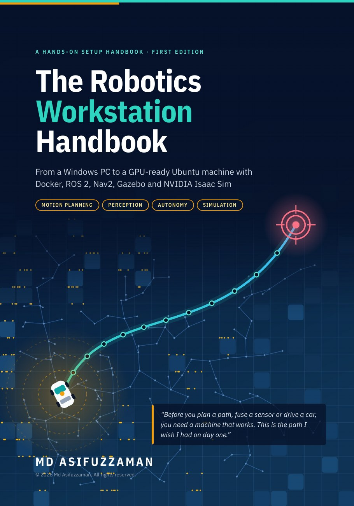

A free, step-by-step handbook that takes you from a Windows PC to a GPU-ready Ubuntu 24.04 machine with Docker, ROS 2 Jazzy, Nav2, Gazebo and NVIDIA Isaac Sim. Every command in order, with a check at the end of each chapter.

What you install
Sixteen chapters in five parts, in the order you do them. Each chapter ends with a test, so you know it worked before you move on.
Start A Windows PC with an NVIDIA RTX GPU and an empty second drive
What you will build, what you need, and how to work through this handbook.
Done when you know which tools you will install and why each one is there.
Done when your hardware meets the requirements and your important files are backed up.
Done when you understand the order of the chapters and the three habits that make it go smoothly.
Prepare Windows, install Ubuntu 24.04 next to it, and protect the new system with snapshots.
Done when the recovery key is stored off the PC and you know which drive is the empty one.
Done when Ubuntu reaches the login screen and you can log in.
Done when git --version prints a version number and nvidia-smi shows your GPU.
Done when Timeshift lists a snapshot and its footer names /dev/sda1.
Git over SSH, VS Code, and Docker with GPU access: the tools every robotics team uses daily.
Done when a clone finishes and the repository’s files appear in ~/projects.
Done when a folder opens in VS Code and the Restricted Mode bar is gone.
Done when a container prints the same GPU table you saw on the host.
ROS 2 Jazzy, Nav2 in Gazebo, and NVIDIA Isaac Sim, tested end to end.
Done when ros2 pkg list shows nav2_bringup and turtlebot3_gazebo.
Done when Gazebo and RViz are open and the terminal ends with Goal succeeded.
Done when the window opens, the log prints app ready and the sphere falls onto the plane.
A clean boot menu, useful extra tools, and fixes for the problems people hit most.
Done when the menu lists Ubuntu and Windows and both start, and systemd-analyze shows the new timing.
Done when the tools you chose are installed and the C++ example prints its message.
Done when every box in the final checklist is ticked.
Goal A workstation ready for planners, perception models and simulation
Anyone aiming for a robotics or autonomy role who wants to do the setup properly, once, and understand every step.
You design the planners in Nav2 and test them in Gazebo and Isaac Sim.
You run full stacks like Autoware in containers, with ROS 2 tying planning, perception and control together.
You need the GPU driver, CUDA inside Docker, and Isaac Sim’s camera and LiDAR data.
You build worlds and sensor models in Gazebo and Isaac Sim.
You write the ROS 2 nodes, build with colcon and ship code through Git.
You debug C++ with gdb and valgrind and close the loop on planned motion.
When I decided to work in robotics and autonomy, the first real obstacle was not an algorithm. It was the machine.
Before I could test a single planner, I had to get Ubuntu, GPU drivers, Docker, ROS 2 and a simulator working together on one computer. The resources were everywhere, but scattered, and every video took a long time to reach the part where you actually type the commands.
There is no real shortcut around this stack. So I wrote down the exact path that worked on my own machine: every command in order, with a check at the end of each chapter so you know you are on track.
Md AsifuzzamanBeaumont, Texas. Focusing on motion planning for robotics and autonomous vehicles.
Software versions change quickly. Subscribe to hear when the handbook is updated and when I publish new technical writing.
Download the free PDF